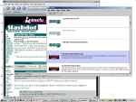
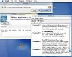
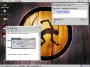

HotSheet is a program that retrieves news headlines from multiple websites, displays them, and allows you to interact with them (e.g. to get the story that goes with a particular headline).
HotSheet works by pulling files from websites that have their news headlines stored in a XML format known as RSS. There are many hundreds of websites that syndicate their headlines in just this fashion. By picking up the RSS file from a URL on the website and reading it HotSheet is able to present the headlines to you and allow you to get more information on each news item.
This is only a partial list of features but it includes the most important ones:
|  | There's a lot going on in this image so I should point out a few key features. Notice that one of the news items has been double clicked. That launched the browser you see in the background and it went to the appropriate page for that news item. In addition it marked the news item as viewed so it now appears faded to make it stand out less in the list without removing it entirely. |
|  | The exact same program running on a Macintosh with OS X! No changes, just Java living up to it's "write once, run anywhere" pledge. Note: This is from a much older version of the program than is shown in the Windows screenshot. |
|  | Yup, the same code running exactly the same on Linux. In this case Red Hat Linux 7.1 with the Ximian Gnome desktop. Here you can see it displaying a progress meter as it retrieves news channels. Note: This is from a much older version of the program than is shown in the Windows screenshot. |
HotSheet is written in Java 2. That means it will run on most any machine with a Java Virtual Machine that is capable of running Java 2 applications (e.g. Windows 9X/NT/2000, Mac OS X, Solaris, Linux) can run it.
If you have Java WebStart installed then installation and running is as simple as clicking on the link below. If Java WebStart is not installed then there should be a link below to let you download it for your machine.
If you are using either Mozilla or Netscape 6 as your browser there is a bug that prevents the WebStart detection code from working. It will always indicate that you do not have it and must download and install it. If you have already done so, ignore the sentence that says you need to install WebStart and click the HotSheet link.
Here is where you go to enter in bugs you find, make requests for new features or just to ask for help. SourceForge Tracker
This is a list of all the properties that you can have in your HotSheet.properties file as of today. These properties can be used to change how certain features within HotSheet are used.
The file should be located in the .hotsheet directory wherever the user home directory is (c:\Documents and Settings\<username> for Windows 2000 users, ~<username> for Linux and Unix variants, not sure for other OSes). HotSheet will automatically create the file if it doesn't already exist the first time it is run and exited. You can then just search for a file named HotSheet.properties to locate it for modification.
http.authPass=password http.authName=johndoe http.proxySet=false http.proxyHost=proxy http.proxyPort=8080
delete.viewed=false
draw.channelImages=true
refresh.interval=1800
Thanks go to:
Only after looking at the documentation for another project on SourceForge did I suddenly realize that I'm not properly acknowledging the various pieces I'm including with HotSheet. That is unforgivable as a lot of people worked very hard to write the software that made building HotSheet much much easier.
With many apologies, here is my attempt to make amends:
The browser launching code is used when HotSheet is run outside of Java Web Start (which provides browser launching code). It was written by Eric Albert.
MouseWheel gives HotSheet support for mousewheels under various Windows flavors before the JDK 1.4 gives makes it a standard part of the SDK. Very Nifty!
MouseWheel suffers under one of the ponderous GNU licenses (the lesser GNU license in this case) . I probably should reread the whole 25K thing again some time to make sure I'm not in violation of it one way or another by not redistributing the mousewheel source code with my source code. Hopefully it is sufficient to merely tell you where you can get it since I didn't make any changes to it. That location is: https://sourceforge.net/projects/jmousewheel/
This software gives HotSheet its ability to parse XML and without it writing HotSheet would have been much harder. Like the mousewheel code, this bundling will be rendered redundant with the JDK 1.4 as it includes JAXP as a standard part of the JDK (as it should be). In the meantime however, there are no less than three different licenses associated with various parts of JAXP that must be included here: the JAXP Reference Implementation license, the W3C Software License, and the Apache Software License.
IBM makes this scripting framework available to let you incorporate support for not just one scripting language at a time but a host of different ones without duplicating effort. Their existing framework supports languages like JavaScript, Tcl, Python, Rexx, and more. There is a possibility that this may become an Apache project in the future which would attract more attention and make sure that it is well run. Here is the IBM license for the BSF.
This code is taken from a Java Pro article by Tarak Modi. The original article and the one follow up article did not specify a license for the code but since it was widely printed in a magazine I assumed it would be OK to use it.
Jacl, Rhino, and Jython are all bundled with HotSheet at this point.
The HotSheet program and all its source code is made available under a BSD style license. That means that you can incorporate parts of it into your own work or even modify it and sell it. The few restrictions that the license places on you can be read here (it's a short license).
Development documentation is located here.
The project files/bug tracking/forums/etc. are hosted using the wonderful services of:
The following are links to resources that may be helpful (or necessary) to use HotSheet or do development using its code.
{kind=link}
{kind=link}
{kind=link}